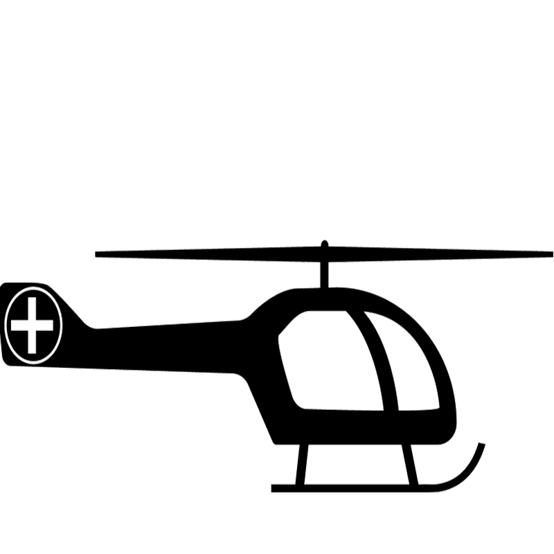

Leadership Message
Because it Matters – three words that capture the essence of everything we do here at the IWK Health Centre and the ideal theme for our 2018-19 annual report to the community. Because it Matters recognizes the dedication, compassion and excellence of our employees, physicians, volunteers and partners who work relentlessly and passionately to pursue a healthy future for women, children, youth and families.
In this year’s report we are sharing a glimpse into a few of the areas we, as an organization, have made great strides over the past 12 months. We continue to work closely with our patient and family partners in improving how they and others access our care, engaging them on the design of new areas, and most importantly ensuring their voices are heard prior to significant decisions being made.
We have focussed on initiatives and programs across the Health Centre that ensure the IWK continues to be a safe place for our patients as they receive their needed care, and advocated on their behalf on issues that might bring them harm, now or in the future. And for those new to our community, we stepped up to support their unique needs and requirements.
As always research and innovation are vital components of the IWK’s success. By taking research directly to patients and families, our researchers have continued to discover and implement innovative solutions that have a significant and real impact on the health and well-being of patients across Canada and around the world.
In the year ahead, we are excited by the completion of another phase of our Neonatal Intensive Care Unit redevelopment, the start of construction of our new Pediatric Intensive Care Unit, as well as the new design for our Children’s Emergency Department. We will do all of this hand-in-hand with our patient partners to ensure we always view our work from their lens.
It’s no secret that the people who work at the IWK are special individuals. They continue to push the envelope, whether they work directly with patients and families, or are integral in supporting the work of those who do.
Everything they do, they do with a singular focus -- Because it Matters.
Our Hightlights
Milestone Moments
IWK Receives Global Baby Friendly Initiative Designation
The IWK Health Centre receives Baby-Friendly Initiative designation, making it the first health centre in the Maritimes and one of only 21 in Canada to receive the designation. The baby friendly hospital initiative was launched by UNICEF and the World Health Organization as a global gold-standard to implement policies and care practices that protect, promote and support breastfeeding.
Supporting Transfusion-Dependent Syrian Refugees
IWK establishes a hemoglobinopathy treatment team in response to an influx of transfusion-dependent thalassemia patients who arrived in Canada as Syrian refugees. The clinic develops evidence-based services dedicated to the medical and psychosocial needs of these patients and fosters their integration in a respectful and accepting manner into the Canadian health care system. Through careful consultation, the team provides education and medical treatments in a way that is highly attentive to patients’ cultural and language needs.
Speaking Out On Cannabis Impacts
In the past ten years, cannabis related calls to the IWK Regional Poison Centre more than double. The presence of cannabis at home places children at risk of unintentional exposures and could result in accidental poisoning or other serious health concerns. Health experts from across the Health Centre develop a number of detailed, evidence-based, recommendations for government to consider and present the IWK’s recommendations to the Legislature’s Law Amendments Committee. IWK experts Dr. Andrew Lynk and Dr. Alexa Bagnell speak to the media about the fact that THC cannabis use has been medically proven to be harmful on numerous fronts, especially with regards to driving, learning and impairing healthy brain development for adolescents and adults under age 25.
Warning Spurs Quick Action to Protect Consumers
A warning about fake car seats being sold online sent out to parents and caregivers by Child Safety Link, the injury prevention program at the IWK Health Centre, has a positive and immediate effect. Child Safety Link’s warning is picked up by local media and broadcast nationally, triggering a swift response from consumer advocates and government regulators to eliminate the unsafe seats from the Canadian market.
Revolutionary Surgery a North American First
Orthopedic surgeon Dr. Ron El-Hawary gives youth suffering from adolescent idiopathic scoliosis (AIS) a new lease on life as the first, and only, doctor to perform the ApiFix procedure in North America. The revolutionary new system allows for a shorter, less invasive, less expensive surgery that preserves motion and function in patients while lessening the chance of back pain later in life.
Surgeon’s Small Act of Kindness Captures World Attention
After completing a surgery on an eight-year old patient, IWK neurosurgeon Dr. Daniel McNeely fulfills that patient’s wish to perform a second surgery, on the child’s stuffed bear. Thinking photos of the event might make people smile, McNeely shares them on an unused Twitter account he had opened in 2014. His first tweet turns into a story and within 24 hours, the story travels around the world appearing in newspapers in Ireland, Turkey, Portugal, India and China, picked up in the UK by BBC and south of the border on CBS, Fox News, USA Today and People Magazine.
Access to Care Dramatically Improves in Four Major Areas
Orthopedics, Dentistry, Community Mental Health & Addictions, Surgical and Ambulatory Gynecology, and the Emergency Department achieve dramatic improvements in patient experience and access to care as a result of LEAN principle workshops. In the Orthopedics Department the average visit length decreases by 11 minutes, freeing up 300 clinic days per year, while new patients waiting is reduced by almost 50 per cent.
Safety Coach Program Spreads Throughout IWK
Safety Coaches play a significant role in reducing preventable patient harm and take a leadership role in enhancing the quality and safety of care provided to patients and families. This year the IWK focused on building the capacity of the Safety Coach program. Eight full day workshops and training of 112 safety coaches ensures coverage and a pervasive safety culture across all three clinical programs and support teams. Recognizable by their yellow lanyards, safety coaches provide consistent mentorship in proven best practices.
SIGNIFICANT EVENTS
Emergency Department to Double in Size
The Nova Scotia government announces plans to double the size of the emergency department at the IWK, ensuring the health centre continues to meet updated standards around patient and staff safety, confidentiality and infection prevention and control. The government also announces it will invest in the purchase of a new MRI scanner to replace an aging piece of equipment.
NICU Celebrates 52 Weeks Infection Free
IWK’s Neonatal Intensive Care Unit (NICU) goes more than 52 weeks without a central line associated blood stream infection (CLABSI) breaking their previous record by 12 weeks. This effort to reduce CLABSI not only demonstrates excellent adherence to safety standards by staff, but keeps patients safe, reduces the use of antibiotics and potentially shortens length of stay.
IWK Welcomes New President & CEO
On October 9, 2018, the Board of Directors of the IWK Health Centre announces the appointment of Dr. Krista Jangaard as the health centre’s new president & CEO. A highly regarded academic neonatologist, Jangaard joined the IWK in 1988 and is well known for her professional accomplishments as well as her passion and commitment to improving the health of women, children youth and families.
Educating Staff on Indigenous Issues
IWK Diversity & Inclusion facilitates ‘blanket exercises’ throughout the year to educate staff and increase empathy on indigenous issues. The Blanket Exercise builds understanding about our shared history as Indigenous and non-Indigenous peoples in Canada by walking through pre-contact, treaty-making, colonization and resistance history.
Developing Physician Leaders
The IWK collaborates with Doctors Nova Scotia on a comprehensive six-month course designed specifically to help Nova Scotian physicians gain valuable expertise they can apply on their journey toward becoming effective leaders in health care.
Largest Disaster Exercise in IWK History
The largest emergency exercise in the IWK’s history take place as over 200 members of the IWK team and members of the community take part in NovEx 18. The mass casualty disaster exercise was designed to test, validate, and update emergency plans and procedures.
By the Numbers
-

4,605
Babies Delivered
-
33,485
Visits to Children's Emergency Department
-

266
LifeFlight Transfers
-
208,846
Outpatient Clinic Visits
-
4,375
Pediatric Surgeries
-
3,631
Women's Health Surgeries
-
6,816
Mammograms
-
14,986
Acute Inpatient Admissions
-
1,203
Learners
-
706
Approximate Staff, Volunteers and Learners Involved in Research Initiatives
Our Team
Volunteer Resources
Through Volunteer Resources, more than 800 community members offer their time and passion to a variety of programs throughout the IWK. Our volunteers partner with paid staff in implementing the mission and vision of the health centre while playing a key role in our efforts to passionately pursue a healthy future for women, children, youth and families.
Foundation
As the fundraising partner of the IWK Health Centre, the IWK Foundation and its donors believe that Maritime women and children deserve access to nothing less than the best health care, right here at home. It’s through the continued generosity and support of the Maritime community that the IWK continues to grow and evolve as a world-class facility. Last year, IWK donors contributed more than $15 million to support the most urgent care priorities including new equipment, updated facilities, the latest technology and research.
Patient and Family Partners
The Family Leadership Council (FLC) and the Youth Advisory Council (YAC) were established over 11 years ago and both have grown to be a driving force in ensuring the IWK is continuously developing our practices related to the principals of Patient and Family Centered Care: respect and dignity, information sharing, participation and collaboration. Today there are over 119 Patient & Family Faculty Partners across the IWK working as co-creators in an effort to ensure we are developing structures and processes that best reflect the principles of patient and family centered care.
IWK Auxiliary
Since its inception in 1946, the Auxiliary has been supporting the IWK Health Centre’s mission. For over 73 years, the Auxiliary has provided funding for research, the purchase of non-medical and medical equipment, and has supported every capital campaign. Indeed, the Auxiliary’s presence is evident everywhere throughout the IWK Health Centre. Since 1946 the Auxiliary has given over 9.2 million dollars to the IWK Health Centre.
Our Community
Petting zoo enjoyed by all at the annual IWK Auxiliary Kermesse.
Petting zoo enjoyed by all at the annual IWK Auxiliary Kermesse.
Petting zoo enjoyed by all at the annual IWK Auxiliary Kermesse.
Petting zoo enjoyed by all at the annual IWK Auxiliary Kermesse.
Petting zoo enjoyed by all at the annual IWK Auxiliary Kermesse.

Petting zoo enjoyed by all at the annual IWK Auxiliary Kermesse.
Petting zoo enjoyed by all at the annual IWK Auxiliary Kermesse.
Petting zoo enjoyed by all at the annual IWK Auxiliary Kermesse.
Petting zoo enjoyed by all at the annual IWK Auxiliary Kermesse.
Petting zoo enjoyed by all at the annual IWK Auxiliary Kermesse.
Petting zoo enjoyed by all at the annual IWK Auxiliary Kermesse.
Financial Performance